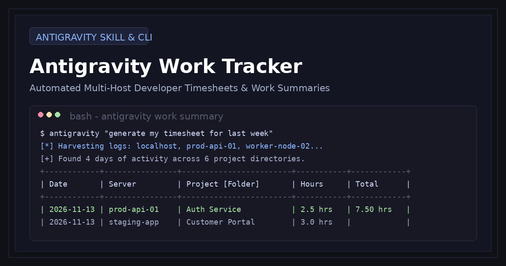

I work across multiple remote SSH servers daily with Antigravity CLI and IDE. This tool harvests all those session logs, groups them by server and project folder, and spits out a timesheet. Zero setup, no daemons, no extra installs.

At the end of the week someone asks what you worked on. You open 8 terminal tabs and try to remember. That's annoying. This tool looks at the Antigravity session logs on every server you SSH into and builds the table for you.
~/.ssh/config so no extra config neededThis is from a real Friday's session, pulled automatically:
| Date | Server | Project [Folder] | Work done | Hours |
|---|---|---|---|---|
| Nov 13 | prod-api-01 | Auth Service /srv/auth-service |
Fixed OAuth2 token refresh race condition and session invalidation | 1.5 |
| staging-app | Customer Portal /var/www/customer-portal |
Optimized table render performance and resolved responsive viewport bugs | 2.0 | |
| worker-node-02 | Data Pipeline /opt/data-pipeline |
Refactored batch ingestion worker and integrated retry telemetry | 1.0 | |
| localhost | CLI Tooling ~/workspace/devtools |
Updated environment config loader and added automated test suite | 1.0 | |
| Daily total | 5.5 hrs | |||
Clone it and run the installer. It copies the skill into ~/.gemini/antigravity/skills/ and sets up a
user crontab to run automatically in the background.
$ git clone https://github.com/jazeel-zainudeen/antigravity-work-tracker.git $ cd antigravity-work-tracker && ./install.sh # After that, just ask Antigravity: # "what work did I do today?" # "generate my timesheet for last week" # "show work done on 2026-11-13" # Or run it directly for a specific date: $ ./scripts/daily-sync.sh 2026-11-13 Daily work report generated: ~/Documents/WorkLogs/2026-11-13.md Daily Excel sheet generated in: ~/Documents/WorkLogs/excel/2026-11-13.xlsx
antigravity-work-tracker/ ├── install.sh # copies to ~/.gemini/skills/, sets crontab ├── SKILL.md # the skill instructions for Antigravity ├── config/ │ ├── project_mappings.example.json # folder → display name template │ └── project_mappings.local.json # private overrides (git-ignored) └── scripts/ ├── harvest.py # zero-dependency SSH log collector ├── render_report.py # outputs merged HTML/MD table ├── export_excel.py # generates merged-cell .xlsx spreadsheets └── daily-sync.sh # cron/manual runner
By default it converts folder basenames to human names. If the folder is called api_backend_v2 and
you want it to show as Core REST API, just add it to your local mapping file (which is git-ignored, so
internal names never leave your machine):
# config/project_mappings.local.json { "api_backend_v2": "Core REST API", "customer-portal": "Customer Web Portal", "auth-service": "Authentication Service" }
~/.gemini/